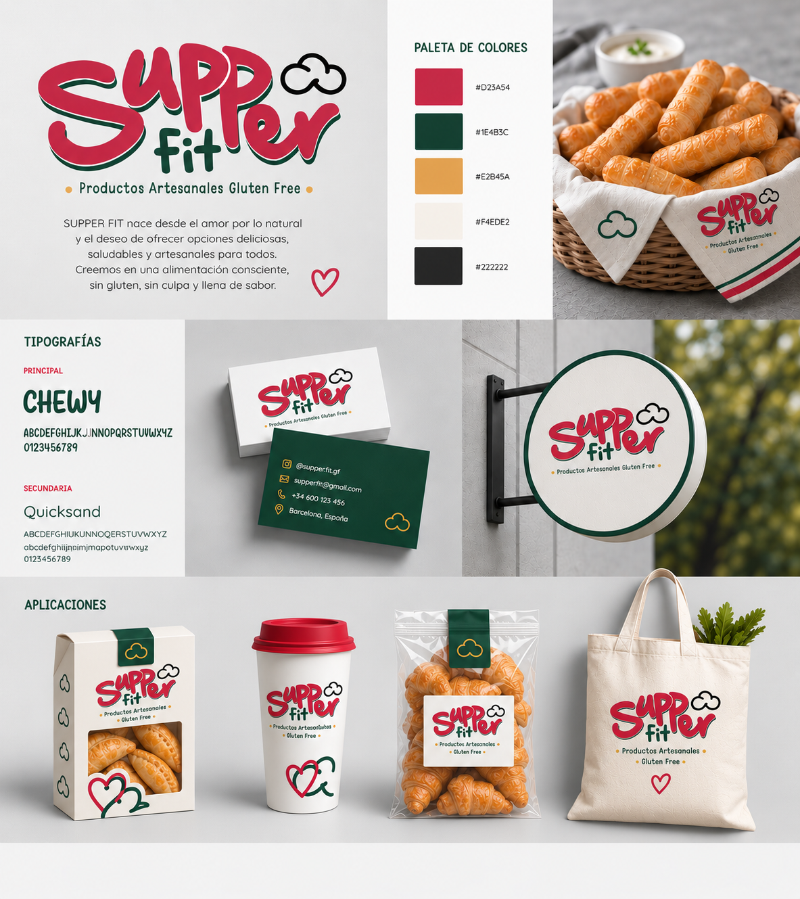
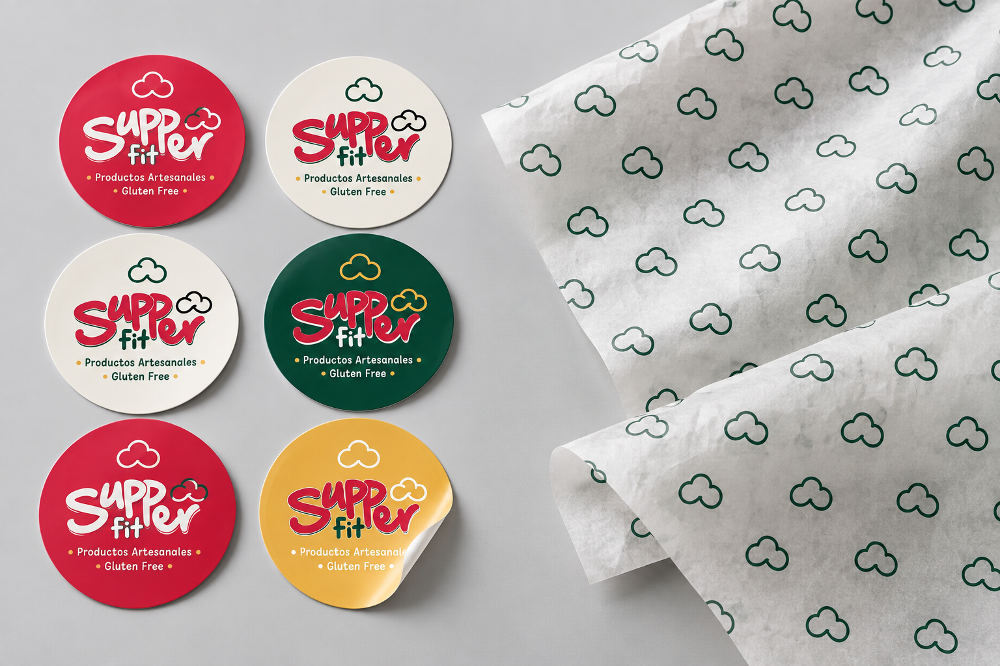
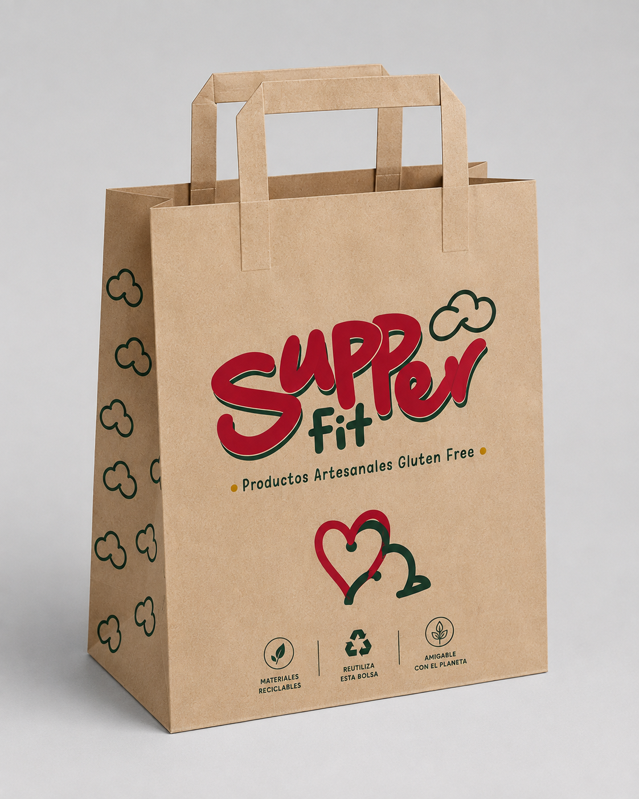
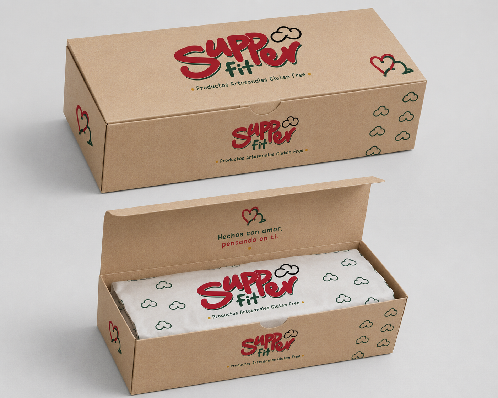

01 — Brandboard
Sistema de identidad: logotipo, paleta cromática, tipografías y aplicaciones principales.

02 — Material impreso
Stickers, papel personalizado y recursos gráficos que extienden la identidad de marca.

03 — Packaging kraft
Aplicación de la identidad sobre bolsa kraft con gráfica, sello de marca y detalles de empaque.

04 — Packaging de producto
Caja kraft y papel personalizado como parte de la experiencia final de presentación.